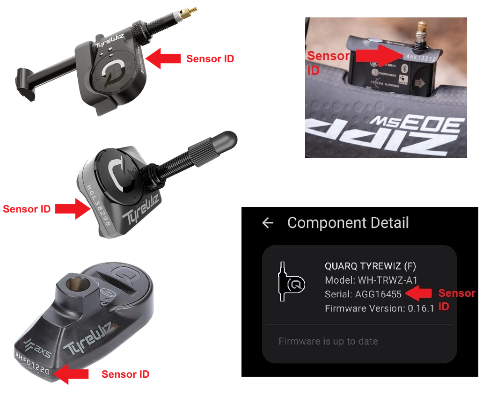
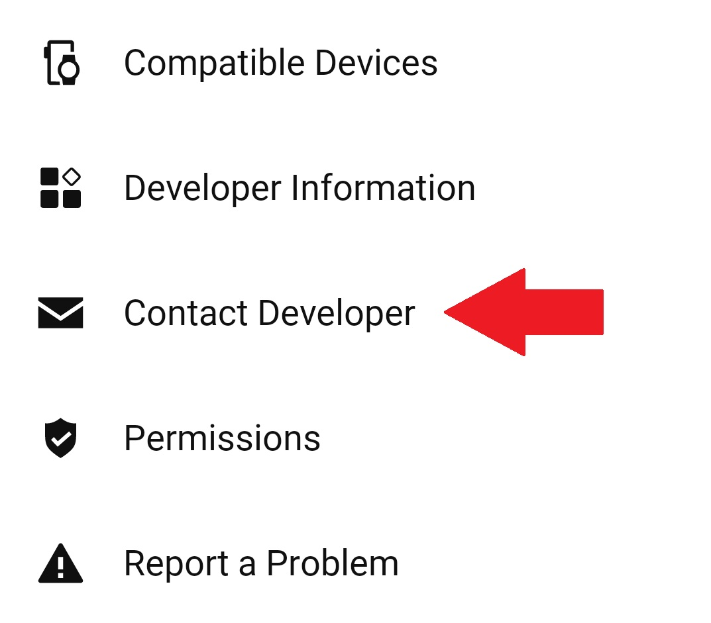

Frequently asked questions
TubeWitch FAQ
This page collects common questions about TubeWitch accuracy, Garmin bicycle tire pressure monitoring, Quarq TyreWiz compatibility, Schwalbe AIRMAX support, Zipp AXS Wheel Sensor support, pressure alarms, sensor IDs, stale indicators, and activity recording.
General questions
Do I need TubeWitch to show tire pressure on a Garmin?
TubeWitch provides a Garmin Connect IQ tire pressure monitoring data field for compatible Quarq TyreWiz sensors, Schwalbe AIRMAX sensors, and Zipp wheels with integrated Zipp AXS Wheel Sensors.
Are the TubeWitch pressure readings accurate?
Yes. It matches the respective manufacturer's mobile app exactly.
Which tire pressure sensors does TubeWitch support?
- Quarq TyreWiz 1.0
- Quarq TyreWiz 2.0
- Quarq TyreWiz for Moto
- Quarq TyreWiz for 101 XPLR
- Zipp 303 SW wheels with integrated Zipp AXS Wheel Sensor
- Zipp 353 NSW wheels with integrated Zipp AXS Wheel Sensor
- Schwalbe AIRMAX Smart Tire Sensor
Additional sensor support is planned.
Will TubeWitch reconnect to TyreWiz or AIRMAX sensors after a Garmin Edge device wakes from sleep mode?
Yes.
Why is it showing a "?" or "X" next to the pressure reading?
"?" indicates the sensor is not delivering data and TubeWitch is trying to reconnect.
"X" indicates TubeWitch timed out for that sensor and stopped searching to save battery. Default timeout is 15 minutes.
Where do I set the pressure targets for my sensors?
Use the sensor manufacturer's mobile app to assign the Front / Rear position and pressure target for each sensor: SRAM AXS for TyreWiz/Zipp sensors or the Schwalbe app for AIRMAX.
For TyreWiz, the sensor stores target pressure and alert behavior, so the TyreWiz LED and TubeWitch stay in sync. For AIRMAX, Front / Rear assignment and pressure targets are managed through the Schwalbe app.
TubeWitch follows the sensor status reported to Garmin. The manufacturer's mobile app is also where sensor-specific setup, firmware, and pressure guidance are managed.
What if the TubeWitch tire pressure alerts seem wrong?
First check the sensor manufacturer's mobile app: SRAM AXS for TyreWiz/Zipp sensors or the Schwalbe app for AIRMAX.
Confirm each sensor is assigned to the correct Front / Rear position and that the pressure target matches the tire setup you expect.
If TubeWitch is showing live pressure but the high or low status seems wrong, the most common cause is that the pressure target or alert range in the manufacturer's app does not match the setup you expect.
Also confirm that the correct sensor IDs are entered in TubeWitch.
Is TubeWitch the same as Tube Witch, TyreWitch, TireWitch, Tyre Wiz, Tire Wiz or TyreWhiz?
Those are alternate spellings riders use in search. Tube Witch, TyreWitch, and TireWitch refer to the TubeWitch data field.
Tyre Wiz, TireWiz, and Tire Wiz refer to the SRAM/Quarq tire pressure sensors. AIRMAX refers to the Schwalbe tire pressure sensor. TubeWitch is the Garmin Connect IQ data field that brings compatible tire pressure sensor data and alerts to Garmin devices.
Why does this exist if SRAM and Schwalbe already have Data Fields for their sensors?
The manufacturers have not updated their Data Fields for newer Garmin devices or added new features in quite some time.
TubeWitch fills that gap.
Capabilities and behavior
Will it work for more than two sensors?
Yes. Save up to five named bikes or wheel sets.
Then either manually select the active sensor set in settings, choose Auto to scan each configured sensor set for 10 seconds, or use the Touch to Switch feature. Only one sensor set can be connected and displayed at a time.
Will it record tire pressure data to the Garmin activity?
Yes. It can record pressure from the active sensor set, alarms, and more.
The average pressures and the sensor set name are also shown in the Garmin Connect IQ stats.
Does the TubeWitch data field have to be on the active Garmin screen to get alerts?
No. TubeWitch can keep watch in the background, so popup and audible alerts still work without keeping the data field on screen.
You can switch to another page and leave your map or preferred screen up until an alert appears.
Does the TubeWitch Data Field offer features that the SRAM Data Field does not have?
Yes. TubeWitch adds audible, pop-up, and vibration alerts; customizable labels and colors; stale-data indicators that keep showing the last known pressure after a disconnect; support for multiple bikes and wheel sets; more layout options; support for newer Edge devices and Garmin watches; touchscreen features; and sensor timeouts that save battery.
Does it support the use of a single front or rear sensor?
Yes, in TubeWitch settings, open the Sensor Set and find the Enabled Sensors setting. Change it to Front or Rear only.
The data field will then show only a single pressure.
Setup Questions
ALERT: SAVING SETTINGS WITH THE CONNECT IQ MOBILE APP IS AFFECTED BY A BUG IN THE GARMIN IQ SYSTEM. MAKE SURE THE TUBEWITCH DATA FIELD IS VISIBLE ON YOUR GARMIN DEVICE WHEN CHANGING SETTINGS. IF SETTINGS STILL DO NOT SAVE, TRY GARMIN EXPRESS. VIEW CURRENT WORKAROUND
General settings-saving tips
Even when Garmin is working normally, the steps below can help if settings do not save reliably.
First, make sure the  TubeWitch data field is visible on your Garmin device before changing settings in the Connect IQ app.
TubeWitch data field is visible on your Garmin device before changing settings in the Connect IQ app.
If sensor IDs or other settings are not being saved by the Garmin Connect IQ mobile app, try entering one sensor ID first and saving immediately before entering the second. Garmin's save process can be inconsistent when many settings are changed at once.
Use Garmin Express for the most reliable way to save settings.
What part of the sensor ID do I enter? It doesn't allow for letters in the sensor ID fields.
The sensor ID fields are restricted to numbers only.
Only the numeric part of the sensor ID is required in settings. For example, if the sensor ID is HGL12345, enter 12345.
What Garmin devices does TubeWitch support?
TubeWitch is compatible with most newer Garmin devices and watches released in 2018 or later. As new Garmin devices are released each year, TubeWitch will be updated as soon as possible to include them.
See the TubeWitch App Store page for the most up-to-date list of compatible devices: Compatible Garmin Devices
To request support for a newly released device, use the Contact Developer link from the TubeWitch page in the Garmin Connect IQ mobile app.
Where do I find the sensor IDs?
For TyreWiz, IDs are printed on the sensor and can also be found in the SRAM AXS mobile app. For AIRMAX, use the numeric sensor ID available from the sensor or the Schwalbe app when available.

Support
Where do I get TubeWitch Support?
Use Garmin's in-app Contact Developer link to contact TubeWitch support.

How do I contact support?
Use the Garmin Connect IQ mobile app.
- Open the TubeWitch Garmin App Store page.
- Tap Open in App.
- Scroll to the bottom of the TubeWitch app page, then tap Contact Developer.
Include your email address to receive a reply.